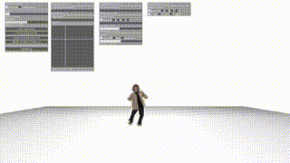

複数人でのダンスのイメージを振付師1人でも検討・確認・共有できるグループダンスパフォーマンス動画作成インタフェース DanceUnisoner を開発した． DanceUnisoner では，ダンサー1人が踊っているダンス動画をコピー&ペーストの要領で三次元空間に配置していくことで，グループダンスの動画を手軽に作成できる． グループダンスの人数や配置，向き，大きさ，時間ずれを一括で容易に変更できるシンプルなGUIを備える．
- 土田修平, 深山 覚, 後藤真孝: DanceUnisoner: グループダンスパフォーマンス動画作成インタフェース, 第27回インタラクティブシステムとソフトウェアに関するワークショップ2019論文集, (Sep. 2019).